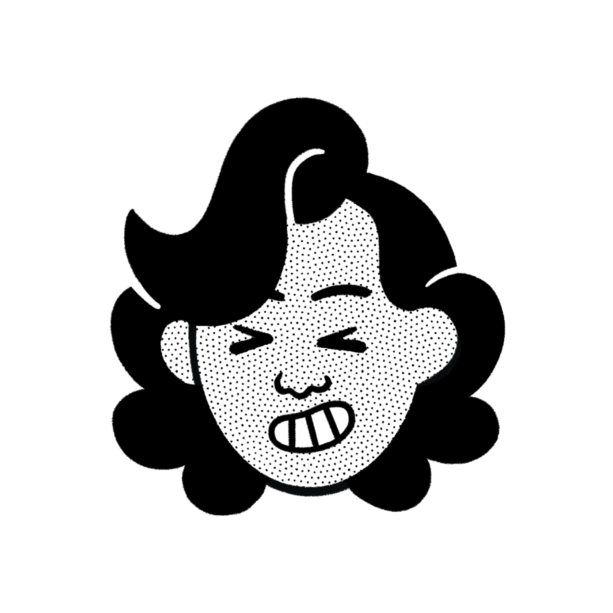

Innovation lead specialized in Artificial Intelligence. Dedicated to driving progress in the transfer of advanced scientific research into impactful technological solutions for both public and private sectors.
Thesis writing while working and receiving valuable guidance from experienced colleagues.
Content-based image and video analysis: 3D video analysis (obtained by Kinect) for human action recognition. Development of "Group Leader Detection and Tracking" algorithm.
Software development regarding people recognition and tracking to compete in RoCKIn@Home 2014 challenge using ROS and REEM robot.
Language of instruction: English
Major in System Design and Automation.
2019 Karla Trejo, Pere García and Josep Puyol-Gruart. Metadata Generation for Multi-Text Classification in Structured Data. In Artificial Intelligence Research and Development. Proceedings of the 22nd International Conference of the Catalan Association for Artificial Intelligence, volume 319 of Frontiers in Artificial Intelligence and Applications, pages 417-421, 2019.
2018 Karla Trejo, Cecilio Angulo, Shin'ichi Satoh and Mayumi Bono. Towards robots reasoning about group behavior of museum visitors: Leader detection and group tracking. Journal of Ambient Intelligence and Smart Environments, volume 10, pages 3-19, 2018.
2016 Karla Trejo, Cecilio Angulo and Juan Manuel Acevedo-Valle. Body Contours AAM in Single Camera: Automatic Landmarking for People Recognition. In Innovation Match MX 2015-2016: 1er Foro Internacional de Talento Mexicano. Memorias de ponencias IMMX, pages 1-8, 2016.
2016 Karla Trejo and Cecilio Angulo. Single-Camera Automatic Landmarking for People Recognition with an Ensemble of Regression Trees. Computación y Sistemas. Thematic issue: Topic Trends in Computing Research, volume 20, pages 19-28, 2016.
2015 Karla Trejo, Cecilio Angulo and Juan Carlos Aguado. Body Contours AAM in Single Camera: Automatic Landmarking for People Recognition. In Artificial Intelligence Research and Development. Proceedings of the 18th International Conference of the Catalan Association for Artificial Intelligence, volume 277 of Frontiers in Artificial Intelligence and Applications, pages 279-282, 2015.
Collection "Intelligent Systems for Sustainable and Inclusive Futures"
International Journal of Computational Intelligence Systems (Q1). — Springer Nature.
27th International Conference of the Catalan Association for Artificial Intelligence (CCIA 2025)
Coordination of the peer-review process to ensure high-quality contributions and strengthen the reputation of the conference. — Valls, Spain.
Doctoral Thesis: "CeCi: Design, Development and Validation of an Affordable Consumer Service Robot as a Social Robot"
Doctoral Programme in Automatic Control, Robotics and Vision, Universitat Politècnica de Catalunya (UPC). — Barcelona, Spain.
PhD Fellowship. Sponsor: National Institute of Informatics (NII) — Tokyo, Japan
18th International Conference of the Catalan Association for Artificial Intelligence, CCIA 2015. Sponsor: ACIA — Valencia, Spain
Sponsor: CONACYT (National Council of Science and Technology, Mexico) — Barcelona, Spain
Sponsor: CONACYT (National Council of Science and Technology, Mexico) — Barcelona, Spain